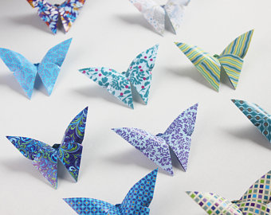

Origami Design
>
About Us
Follow Us
(Click On the Picture To See How To Make An Origami Crane)
Intresting Facts About Cranes
- Cranes are powerful flyers, with some having the ability to fly over the Himalayas.
- Cranes are found on all continents except in South America and Antarctica.
- Throughout Asia, the crane is a symbol of happiness and eternal youth. In Japan, the crane is one of the mystical or holy creatures (others include the dragon and the tortoise) and symbolizes good fortune and longevity because of its fabled life span of a thousand years.

(Click On the Picture To See How To Make An Origami Butterfly)
Intresting Facts About Butterlies
- Butterfly Wings Are Transparent.
- Butterflies Taste With Their Feet.
- Butterflies Often Live Just a Few Weeks.